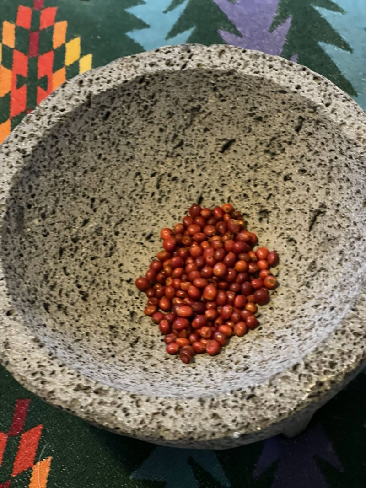
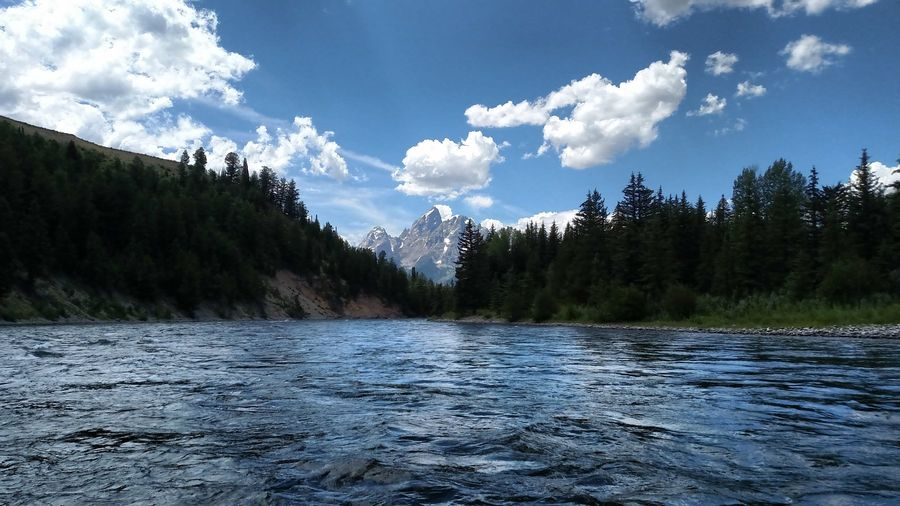
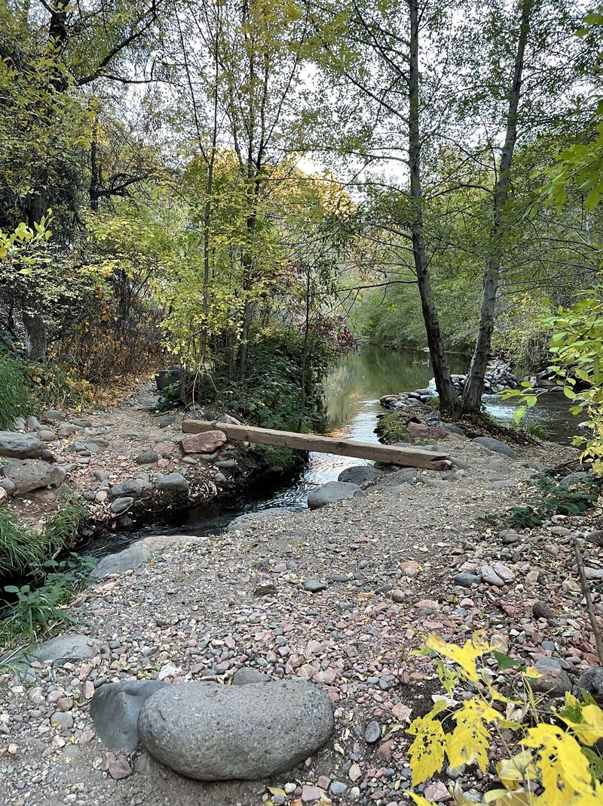
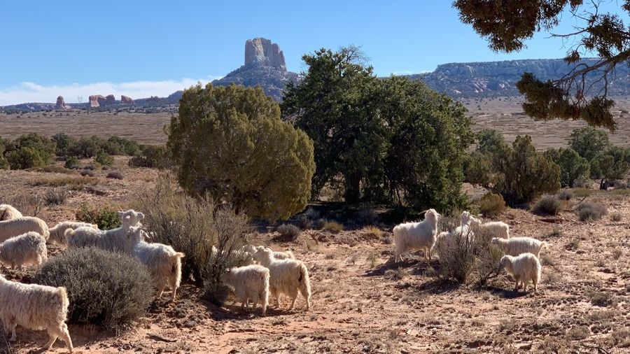
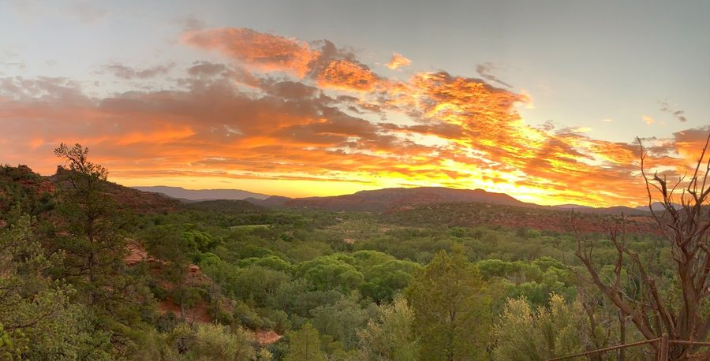
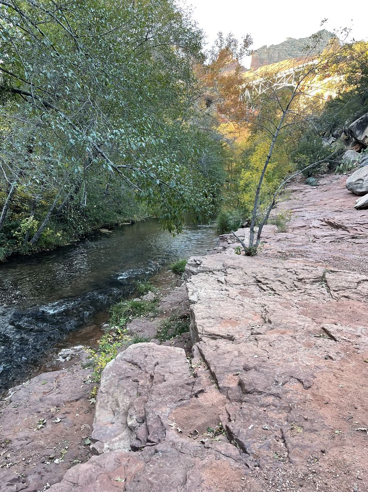
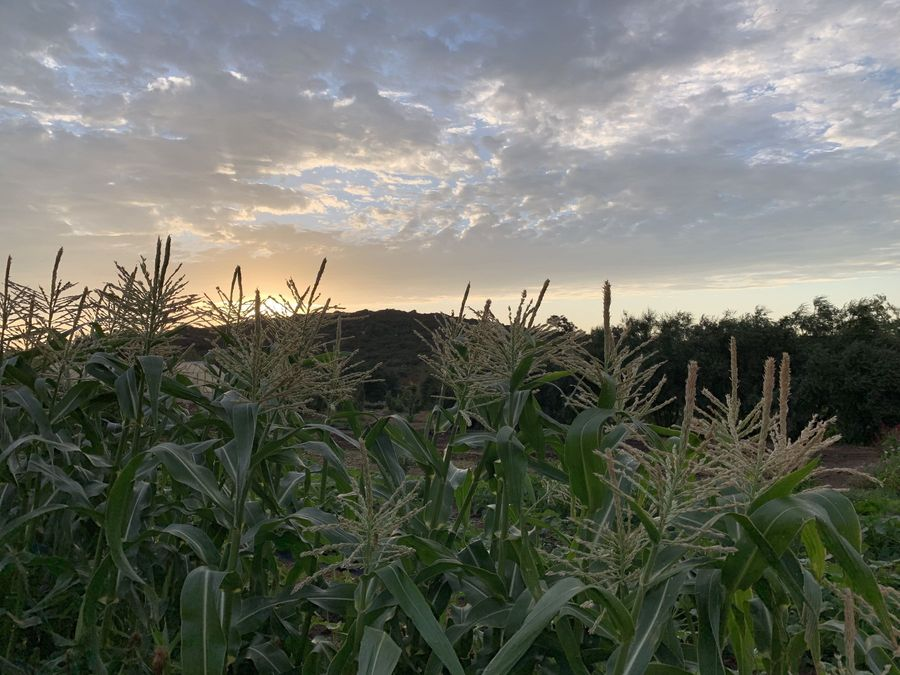
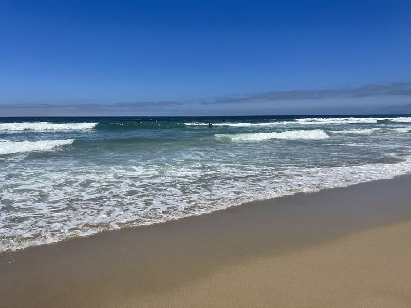

1
First light
Rise before the noise. Set the frequency before the day sets it for you. Name what is already given until the body believes it.
A meadow at 5:39 in the morning. The Peaks before the cloud lifts.

Before any tool, settle the body. Calm is stored, not summoned. One sitting a morning, by the water, and the day is carried differently.
In four. Hold four. Out six. Hold four. Three rounds, then the creek.
Did your shoulders drop? The door is open.

Today
You do not make the calm. You retrieve it. You store it in your bones in the quiet days.
From the first crossing. A new line, and a new photograph, every morning.
Week one. Six minutes, with a dawn wind under the voice. Thirty seconds to hear it, then the whole sitting.
A guided session in a masked voice.


No account. Your sittings are kept in this browser, and nothing is sold on the way. The gate is a threshold, not a lock: if you have already settled, walk through.

One breath, counted, by the creek. The Stone Breath, the practice the first book is named for.
Opens with your first sitting
Seven mornings. The stone in the hand, the record of hard things you came through.
After seven mornings
A month of returning, several mornings a week. The eight weeks, one training at a time.
After a month
Held with others who kept the practice. The deep studies and the live voice.
When the crossing is heldLive it imperfectly and daily rather than perfectly and never. Four movements, the way the carriers kept them.

Rise before the noise. Set the frequency before the day sets it for you. Name what is already given until the body believes it.
A meadow at 5:39 in the morning. The Peaks before the cloud lifts.

Soften the eye when friction rises. Refuse overburden; hand one thing to the circle. One act of honor, daily.
Water over boulders in March. A runner on the sand road, carrying the next leg.

Three lines: what I carried, what I learned, whom I honored. Release the day's scarcity moment. Say it the other way.
The Pacific at 7:53 in the evening. The lake at 7:19, with the mountain gone dark.

One real circle or kin call. Hands on a craft. Hours on the land, no screen. One hour of deliberate nothing.
A hand on the wool. Hands at the braid.
One training a week, in the order every tradition used. Regulate the operator before you read anything. Then find what holds, store it, check it, share the load, bring it home, and tie it to something that returns.
1Settle the carrier first: the record of hard things you came through, the stone, the whole horizon when it gets bad.
The high desert · with Tonas2Steer by the house, not the star that climbs out of reach.
The Pacific · with Nalu 3
3What the storm took, and what stayed true underneath it.
The Sahara · with Satoshi 4
4Put what you must carry into a road your feet already know.
Australia · with Chariya 5
5Stop tracking the noise. Start mapping the holes.
Borneo · with Aoi6Nobody carries the whole way. The written specifics and the spoken meaning, said back.
The Andes · with Illary 7
7Record the one who holds it, make two copies, use it once out loud.
The Baltic · with Austėja 8
8Make the year ask: tie it to something that already returns.
Mindanao · with Kiprono
Six readings for a leadership team or a board. Each one holds a passage, the principle, questions for the room, and one practice for the quarter. Nothing sacred is in them. Only what works and belongs to no one.
Markets, products and roles are stars: low and useful for a while, then they climb out of reach. The house is what the company is actually for.
Nobody carries the whole way. Keep the legs short and put the engineering into the hand-off.
A frightened room cannot think. Settle the room before anything is decided, and say the decision back before anyone leaves.
Will this make the great-grandchildren whole, or will it hollow them out? Leaders recognized, not campaigned for.
Wanting is not a feeling. It's a heart rate. A mind rehearsing lack misreads the ground it is crossing.
Composure is a reserve, built on quiet days and spent on hard ones. Read the weather, not the insult.
Each book opens a door here. The Stone Breath is the first book's practice, counted above with the creek. The eight weeks follow the disciplines of the second. The readings for your work come out of the third. The books themselves live at Ancestral Watch.

A story of remembering, and the breath counted on a river pebble: in four, hold four, out six, hold four.
Book one · the Door
Seven days at a world congress, and the seven disciplines the carriers trained. The eight weeks follow them.
Book two · the Crossing
The original instructions for the world we rebuild. The readings for goals, structure, meetings and governance come from here.
Book three · the CouncilEvery photograph and every second of film on this page is our own: the canyon, the creek, the Peaks, the coast, the fire.












Come back in the morning. The line changes, the photograph changes, and the count stays the same: in four, hold four, out six, hold four.